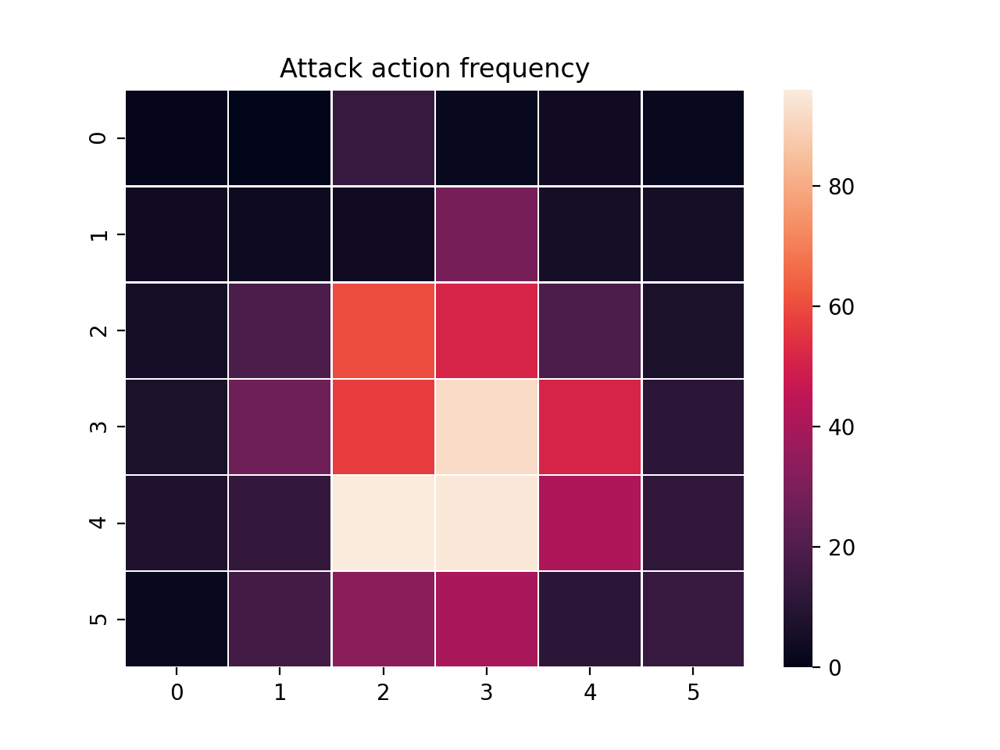

PredatorPrey
PredatorPrey is a multiagent simulation useful for exploring competitve behaviors between groups of agents. Resources “grow” in a two-dimensional grid. Prey agents move around the grid harvesting resources, and predator agents move around the grid hunting the prey agents.
{kind=link}
Animation of predator and prey agents in a two-dimensional grid.
This tutorial uses the PredatorPrey simulation, and the PredatorPrey configuration.
注意
This tutorial requires seaborn for visualizing the resources. This can be easily
added to your virtual environment with pip install seaborn.
Creating the PredatorPrey Simulation
The Agents in the Simulation
In this tutorial, we will train predators to hunt prey by moving around the grid and attacking them when they are nearby. In order to learn this, they must be able to see a subset of the grid around their position, and they must be able to distinguish between other predators and prey. We will reward the predators as follows:
The predator should be rewarded for successfully killing a prey.
The predator should be penalized for trying to move off the edge of the grid.
The predator should be penalized for taking too long.
Concurrently, we will train prey agents to harvest resources while attempting to avoid predators. To learn this, prey must be able to see a subset off the grid around them, both the resources available and any other agents. We will reward the prey as follows:
The prey should be rewarded for harvesting resources.
The prey should be penalized for trying to move off the edge of the grid.
The prey should be penalized for getting eaten by a predator.
The prey should be penalized for taking too long.
In order to accomodate this, we will create two types of Agents, one for Predators and one for Prey. Notice that all agents can move around and view a subset of the grid, so we’ll capture this in a parent class and encode the distinction in the agents’ respective child classes.
from abc import ABC, abstractmethod
from gym.spaces import Box, Discrete, Dict
import numpy as np
from abmarl.sim import PrincipleAgent, AgentBasedSimulation
class PredatorPreyAgent(PrincipleAgent, ABC):
@abstractmethod
def __init__(self, move=None, view=None, **kwargs):
super().__init__(**kwargs)
self.move = move
self.view = view
@property
def configured(self):
return super().configured and self.move is not None and self.view is not None
class Prey(PredatorPreyAgent):
def __init__(self, harvest_amount=None, **kwargs):
super().__init__(**kwargs)
self.harvest_amount = harvest_amount
@property
def configured(self):
return super().configured and self.harvest_amount is not None
@property
def value(self):
return 1
class Predator(PredatorPreyAgent):
def __init__(self, attack=None, **kwargs):
super().__init__(**kwargs)
self.attack = attack
@property
def configured(self)
return super().configured and self.attack is not None
@property
def value(self):
return 2
The PredatorPrey Simulation
The PredatorPrey Simulation needs much detailed explanation, which we believe will distract from this tutorial. Suffice it to say that we have created a simulation that works with the above agents and captures our desired features. This simulation can be found in full in our repo.
Training the Predator Prey Simulation
With the PredatorPrey simulation and agents at hand, we can create a configuration file for training.
Simulation Setup
Setting up the PredatorPrey simulation requires us to explicity make agents and pass those to the simulation builder. Once we’ve done that, we can choose which SimulationManager to use. In this tutorial, we’ll use the AllStepManager. Then, we’ll wrap the simulation with our MultiAgentWrapper, which enables us to connect with RLlib. Finally, we’ll register the simulation with RLlib.
Policy Setup
Next, we will create the policies and the policy mapping function. Because predators and prey are competitve, they must train separate polices from one another. Furthermore, since each prey is homogeneous with other prey and each predator with other predators, we can have them train the same policy. Thus, we will have two policies: one for predators and one for prey.
Experiment Parameters
The last thing is to wrap all the parameters together into a single params dictionary. Below is the full configuration file:
# Setup the simulation
from abmarl.sim.predator_prey import PredatorPreySimulation, Predator, Prey
from abmarl.managers import AllStepManager
region = 6
predators = [Predator(id=f'predator{i}', attack=1) for i in range(2)]
prey = [Prey(id=f'prey{i}') for i in range(7)]
agents = predators + prey
sim_config = {
'region': region,
'max_steps': 200,
'agents': agents,
}
sim_name = 'PredatorPrey'
from abmarl.external.rllib_multiagentenv_wrapper import MultiAgentWrapper
from ray.tune.registry import register_env
sim = MultiAgentWrapper(AllStepManager(PredatorPreySimulation.build(sim_config)))
agents = sim.unwrapped.agents
register_env(sim_name, lambda sim_config: sim)
# Set up policies
policies = {
'predator': (None, agents['predator0'].observation_space, agents['predator0'].action_space, {}),
'prey': (None, agents['prey0'].observation_space, agents['prey0'].action_space, {})
}
def policy_mapping_fn(agent_id):
if agent_id.startswith('prey'):
return 'prey'
else:
return 'predator'
# Experiment parameters
params = {
'experiment': {
'title': '{}'.format('PredatorPrey'),
'sim_creator': lambda config=None: sim,
},
'ray_tune': {
'run_or_experiment': "PG",
'checkpoint_freq': 50,
'checkpoint_at_end': True,
'stop': {
'episodes_total': 20_000,
},
'verbose': 2,
'config': {
# --- Simulation ---
'env': sim_name,
'env_config': sim_config,
'horizon': 200,
# --- Multiagent ---
'multiagent': {
'policies': policies,
'policy_mapping_fn': policy_mapping_fn,
},
# "lr": 0.0001,
# --- Parallelism ---
# Number of workers per experiment: int
"num_workers": 7,
# Number of simulations that each worker starts: int
"num_envs_per_worker": 1, # This must be 1 because we are not "threadsafe"
# 'simple_optimizer': True,
# "postprocess_inputs": True
},
}
}
Using the Command Line
Training
With the configuration script complete, we can utilize the command line interface
to train our predator. We simply type abmarl train predator_prey_training.py,
where predator_prey_training.py is our configuration file. This will launch Abmarl,
which will process the script and launch RLlib according to the
specified parameters. This particular example should take about 10 minutes to
train, depending on your compute capabilities. You can view the performance in
real time in tensorboard with tensorboard --logdir ~/abmarl_results.
We can find the rewards associated with the policies on the second page of tensorboard.
Visualizing
Having successfully trained predators to attack prey, we can vizualize the agents’ learned behavior with the visualize command, which takes as argument the output directory from the training session stored in ~/abmarl_results. For example, the command
abmarl visualize ~/abmarl_results/PredatorPrey-2020-08-25_09-30/ -n 5 --record
will load the training session (notice that the directory name is the experiment title from the configuration script appended with a timestamp) and display an animation of 5 episodes. The –record flag will save the animations as .mp4 videos in the training directory.
Analyzing
We can further investigate the learned behaviors using the analyze command along with an analysis script. Analysis scripts implement a run command which takes the Simulation and the Trainer as input arguments. We can define any script to further investigate the agents’ behavior. In this example, we will craft a script that records how often a predator attacks from each grid square.
def run(sim, trainer):
import numpy as np
import seaborn as sns
import matplotlib.pyplot as plt
# Create a grid
grid = np.zeros((sim.sim.region, sim.sim.region))
attack = np.zeros((sim.sim.region, sim.sim.region))
# Run the trained policy
policy_agent_mapping = trainer.config['multiagent']['policy_mapping_fn']
for episode in range(100): # Run 100 trajectories
print('Episode: {}'.format(episode))
obs = sim.reset()
done = {agent: False for agent in obs}
pox, poy = sim.agents['predator0'].position
grid[pox, poy] += 1
while True:
joint_action = {}
for agent_id, agent_obs in obs.items():
if done[agent_id]: continue # Don't get actions for dead agents
policy_id = policy_agent_mapping(agent_id)
action = trainer.compute_action(agent_obs, policy_id=policy_id)
joint_action[agent_id] = action
obs, _, done, _ = sim.step(joint_action)
pox, poy = sim.agents['predator0'].position
grid[pox, poy] += 1
if joint_action['predator0']['attack'] == 1: # This is the attack action
attack[pox, poy] += 1
if done['__all__']:
break
plt.figure(2)
plt.title("Attack action frequency")
ax = sns.heatmap(np.flipud(np.transpose(attack)), linewidth=0.5)
plt.show()
We can run this analysis with
abmarl analyze ~/abmarl_results/PredatorPrey-2020-08-25_09-30/ movement_map.py
which renders the following image for us
{kind=link}
The heatmap figures indicate that the predators spend most of their time attacking prey from the center of the map and rarely ventures to the corners.
注解
Creating the analysis script required some in-depth knowledge about the inner workings of the PredatorPrey Simulation. This will likely be needed when analyzing most simulation you work with.
Extra Challenges
Having successfully trained the predators to attack prey experiment, we can further explore the agents’ behaviors and the training process. For example, you may have noticed that the prey agents didn’t seem to learn anything. We may need to improve our reward schema for the prey or modify the way agents interact in the simulation. This is left open to exploration.